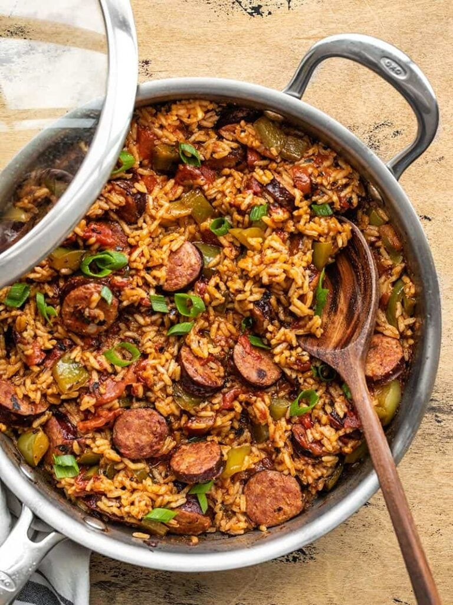

Cajun Sausage and Rice

Description
I think of this Cajun Sausage and Rice Skillet kind of like “jambalaya light”. It has similar flavors and ingredients as jambalaya, but it’s a slightly scaled back, simplified version, perfect for quick weeknight dinner. And the best part? The leftovers are SO GOOD. So feel free to add this tasty skillet to your meal prep rotation!
Ingredients
- 14 oz. Andouille sausage* ($3.99)
- 1 Tbsp cooking oil ($0.04)
- 1 bell pepper ($0.89)
- 1 tsp smoked paprika ($0.10)
- 1/2 tsp dried oregano ($0.05)
- 1/2 tsp dried thyme ($0.05)
- 1/4 tsp garlic powder ($0.02)
- 1/4 tsp onion powder ($0.02)
- 1/8 tsp cayenne pepper ($0.02)
- 1/8 tsp freshly cracked black pepper ($0.01)
- 1 15oz. can fire roasted diced tomatoes ($1.00)
- 1 cup long grain white rice ($0.62)
- 1.5 cups chicken broth ($0.20)
- 2 green onions, sliced ($0.20)
Steps
- Slice the sausage into ¼-½ inch thick slices. Add the sausage and cooking oil to a deep skillet or Dutch oven and sauté over medium heat until the sausage is well browned. Don't worry if the sausage begins to brown on the bottom of the skillet. That's extra flavor that will cook into the rice later.
- While the sausage is cooking, dice the bell pepper. Once the sausage is browned, add the bell pepper to the skillet and continue to sauté for about one more minute.
- Add the spices (smoked paprika, oregano, thyme, garlic powder, onion powder, cayenne, and black pepper) to the skillet with the sausage and bell pepper and continue to sauté for one minute more to toast the spices.
- Add the fire roasted diced tomatoes (with juices), rice, and chicken broth to the skillet. Stir to combine and dissolve any browned bits off the bottom of the skillet.
- Place a lid on the skillet, turn the heat up to medium-high, and allow the broth to come to a full boil. Once it reaches a boil, turn the heat down to low and let the skillet simmer for 20 minutes. After 20 minutes, remove the skillet from the heat and let it rest, with the lid on, for an additional 5 minutes.
- After the skillet has rested, remove the lid, and fold the sausage and rice to redistribute the rice and sausage throughout. Top with sliced green onions and serve!